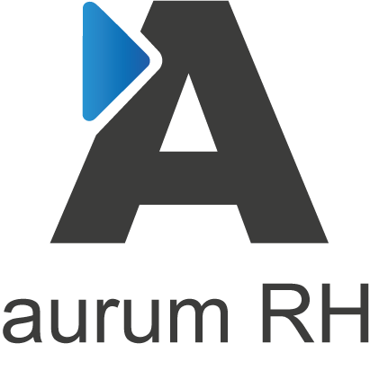
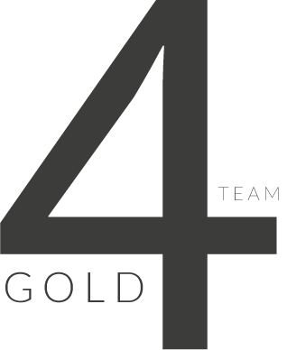

<div class="main-container d-flex align-items-center justify-content-center">
    <div class="container-about">
        <div class="row">
            <!-- Cuadrante 1: Logo -->
            <div class="col-md-12 cuadrante-1 d-flex justify-content-center align-items-center p-3">
                
            </div>
        </div>
        <div class="row">
            <!-- Cuadrante 2: Texto -->

            <div class="col-md-6 d-flex flex-column justify-content-center align-items-center cuadrante-2 p-3">
                <div class="row flex-column">
                    <!-- Card 1 -->
                    <div class="col-md-12">
                        <app-about-card class="py-2 border-custom " [developer]="tarjetas[0]"></app-about-card>
                    </div>
                    <!-- Card 2 -->
                    <div class="col-md-12">
                        <app-about-card class="py-2 border-custom" [developer]="tarjetas[1]"></app-about-card>
                    </div>
                    <!-- Card 3 -->
                    <div class="col-md-12">
                        <app-about-card class="py-2 border-custom" [developer]="tarjetas[2]"></app-about-card>
                    </div>
                </div>
            </div>
            <!-- Cuadrante 3: cards -->
            <div class="col-md-6 d-flex flex-column align-items-center justify-content-center cuadrante-3">
                <p class="display-6 fw-medium title title-effect text-center ">Aurum RH</p>
                <div class="text text-break text-justify px-3 text-effect">
                    <p>
                        Aurum RH es un registro web de solicitantes y entrevistas
                        técnicas que se realizan durante el proceso de selección de un
                        candidato. Los aspirantes al puesto y los usuarios de recursos humanos
                        tendrán un registro de las ofertas de trabajo, de las entrevistas y de las
                        pruebas técnicas. También se podrá mostrar el resultado, y la fecha de
                        realización, de las habilidades que se han evaluado en las entrevistas
                        técnicas. La aplicación también constará de una barra de progreso que
                        muestre el punto del proceso donde se encuentra el candidato y un
                        seguimiento del proceso del candidato.
                    </p>
                </div>
            </div>
        </div>
            <div class="row">
                <!-- Cuadrante 4: logo2 -->
                <div class="col-md-12 cuadrante-4 d-flex justify-content-center align-items-center p-4">
                    
                </div>
            </div>
        
    </div>
</div>